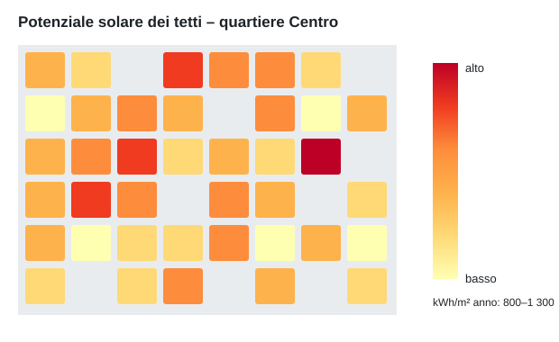

Catasto solare
La mappa indica quanta energia solare riceve ogni tetto del quartiere Centro in un anno, da circa 800 kWh/m² (giallo chiaro) a 1 300 kWh/m² (rosso scuro). Per una valutazione del vostro tetto contattate l'azienda elettrica.

Prossimi appuntamenti
| Data | Evento |
|---|---|
| 1.2.2026 | Serata informativa in sala comunale |
| 26.3.2026 | Udienza del sindaco |
Newsletter
Una volta al mese vi informiamo sulle novità della regione. Iscriversi alla newsletter